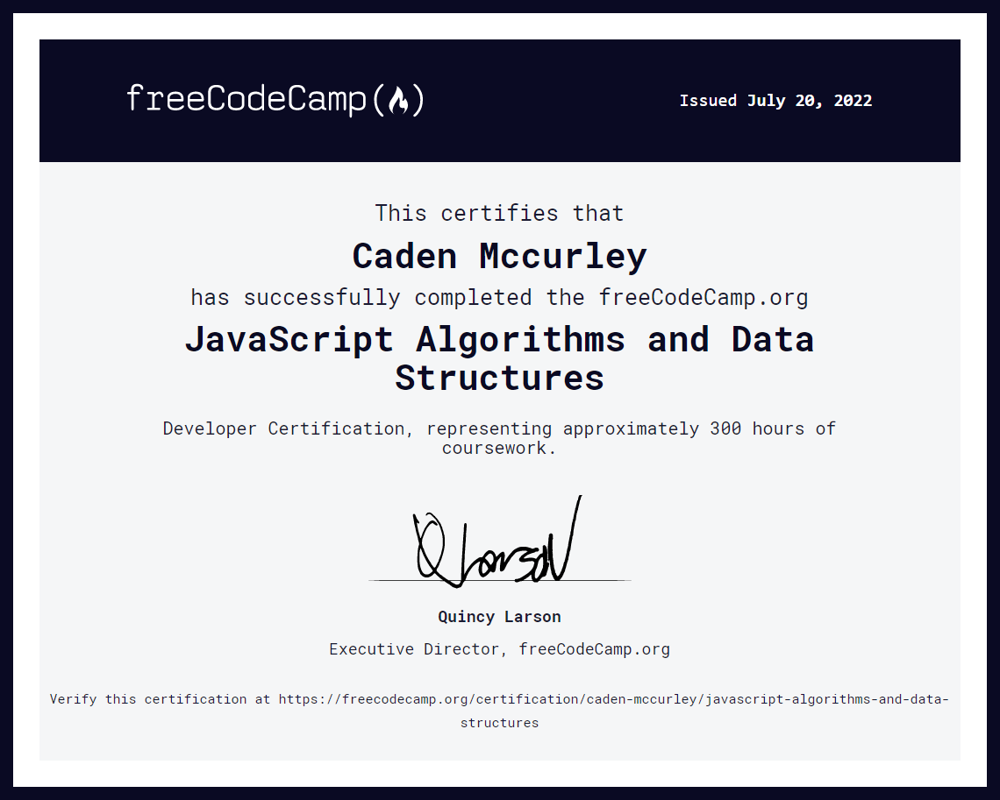

Have you ever wanted to learn how to code or understand how computers work? Through personalized coding tutoring, you can choose to learn web development, app development, hacking, and much more - suitable for all levels.
Some topics we can cover: - JavaScript (for web development) - Mobile app development - Web design - Ethical hacking - Linux - Video game development - Cybersecurity
Whether you're a beginner looking to learn the basics or an experienced coder wanting to expand your skills, I can provide customized tutoring to help you achieve your goals. We can cover anything from learning how to best utilize the features of your smartphone/computer to enhancing your Cybersecurity practics to prevent fraud and abuse.
I find programming and cybersecurity to be the two most important subjects I tutor. Programming applies math in a practical way, which heavily promotes problem-solving and logical thinking beyond computers and computer science. Cybersecurity is also critical to prevent you from the increasingly prevalent threat of digital fraud and abuse.
Sessions are very affordable and can be done remotely via Zoom/Google Meet or in-person if you're local to the Pierce County area.
If you're interested in scheduling a tutoring session to kickstart your coding/technology journey, get in touch at:
I have over 5 years of programming experience and am certified in JavaScript.
